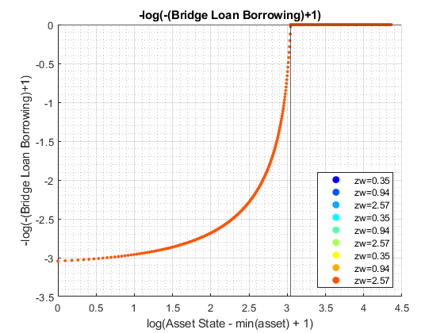
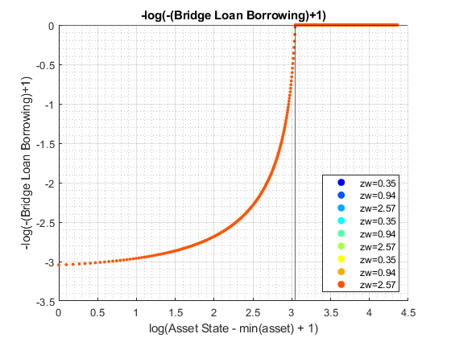
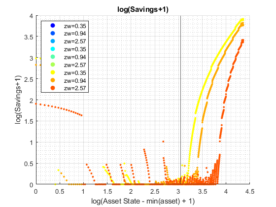
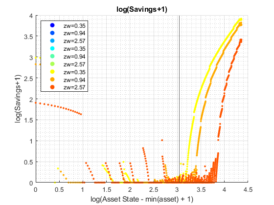

Derive Distributions for For+Inf+Borr+Save Risky + Safe Asset Interpolated-Percentage (Wrapper)
back to Fan's Dynamic Assets Repository Table of Content.
Contents
function [result_map] = ff_ipwkbz_fibs_ds_wrapper(varargin)
FF_IPWKBZ_FIBS_DS_WRAPPER finds the stationary asset distributions
This is a warpper function.
Default
- it_subset = 5 is basic invoke quick test
- it_subset = 6 is invoke full test
- it_subset = 7 is profiling invoke
- it_subset = 8 is matlab publish
- it_subset = 9 is invoke operational (only final stats) and coh graph
it_param_set = 8; bl_input_override = true; [param_map, support_map] = ffs_ipwkbz_fibs_set_default_param(it_param_set); % Note: param_map and support_map can be adjusted here or outside to override defaults % param_map('it_a_n') = 750; % param_map('it_z_n') = 15; % Note: below to for identical results as benchmark ff_ipwkbz_ds_wrapper.m % param_map('fl_r_fsv') = 0.025; % param_map('fl_r_inf') = 0.085; % param_map('fl_r_inf_bridge') = 0.085; % param_map('fl_r_fbr') = 0.085; % param_map('bl_bridge') = true; % param_map('st_analytical_stationary_type') = 'loop'; % param_map('st_analytical_stationary_type') = 'vector'; param_map('st_analytical_stationary_type') = 'eigenvector'; % get armt and func map [armt_map, func_map] = ffs_ipwkbz_fibs_get_funcgrid(param_map, support_map, bl_input_override); % 1 for override default_params = {param_map support_map armt_map func_map};
Parse Parameters 1
% if varargin only has param_map and support_map, params_len = length(varargin); [default_params{1:params_len}] = varargin{:}; param_map = [param_map; default_params{1}]; support_map = [support_map; default_params{2}]; if params_len >= 1 && params_len <= 2 % If override param_map, re-generate armt and func if they are not % provided bl_input_override = true; [armt_map, func_map] = ffs_ipwkbz_fibs_get_funcgrid(param_map, support_map, bl_input_override); else % Override all armt_map = [armt_map; default_params{3}]; func_map = [func_map; default_params{4}]; end % if profile, profile DP + Dist here support_map('bl_profile_dist') = false; % append function name st_func_name = 'ff_ipwkbz_fibs_ds_wrapper'; support_map('st_profile_name_main') = [st_func_name support_map('st_profile_name_main')]; support_map('st_mat_name_main') = [st_func_name support_map('st_mat_name_main')]; support_map('st_img_name_main') = [st_func_name support_map('st_img_name_main')];
Parse Parameters
% param_map params_group = values(param_map, {'st_analytical_stationary_type'}); [st_analytical_stationary_type] = params_group{:}; % support_map params_group = values(support_map, ... {'st_profile_path', 'st_profile_prefix', 'st_profile_name_main', 'st_profile_suffix','bl_time'}); [st_profile_path, st_profile_prefix, st_profile_name_main, st_profile_suffix, bl_time] = params_group{:};
Start Profiler and Timer
Start Profile
if (it_param_set == 7) close all; profile off; profile on; end % Start Timer if (bl_time) tic; end
Solve DP
bl_input_override = true; result_map = ff_ipwkbz_fibs_vf_vecsv(param_map, support_map, armt_map, func_map);
----------------------------------------
----------------------------------------
xxxxxxxxxxxxxxxxxxxxxxxxxxxxxxxxxxxxxxxx
xxxxxxxxxxxxxxxxxxxxxxxxxxxxxxxxxxxxxxxx
Begin: Show all key and value pairs from container
CONTAINER NAME: SUPPORT_MAP
----------------------------------------
Map with properties:
Count: 47
KeyType: char
ValueType: any
xxxxxxxxxxxxxxxxxxxxxxxxxxxxxxxxxxxxxxxx
xxxxxxxxxxxxxxxxxxxxxxxxxxxxxxxxxxxxxxxx
----------------------------------------
----------------------------------------
pos = 1 ; key = bl_display ; val = false
pos = 2 ; key = bl_display_defparam ; val = true
pos = 3 ; key = bl_display_dist ; val = false
pos = 4 ; key = bl_display_evf ; val = false
pos = 5 ; key = bl_display_final ; val = false
pos = 6 ; key = bl_display_final_dist ; val = true
pos = 7 ; key = bl_display_final_dist_detail ; val = true
pos = 8 ; key = bl_display_funcgrids ; val = false
pos = 9 ; key = bl_display_infbridge ; val = false
pos = 10 ; key = bl_display_minccost ; val = false
pos = 11 ; key = bl_graph ; val = true
pos = 12 ; key = bl_graph_coh_t_coh ; val = true
pos = 13 ; key = bl_graph_evf ; val = false
pos = 14 ; key = bl_graph_forinf_discrete ; val = true
pos = 15 ; key = bl_graph_forinf_pol_lvl ; val = true
pos = 16 ; key = bl_graph_forinf_pol_pct ; val = true
pos = 17 ; key = bl_graph_funcgrids ; val = false
pos = 18 ; key = bl_graph_funcgrids_detail ; val = false
pos = 19 ; key = bl_graph_onebyones ; val = true
pos = 20 ; key = bl_graph_pol_lvl ; val = false
pos = 21 ; key = bl_graph_pol_pct ; val = false
pos = 22 ; key = bl_graph_val ; val = false
pos = 23 ; key = bl_img_save ; val = false
pos = 24 ; key = bl_mat ; val = false
pos = 25 ; key = bl_post ; val = true
pos = 26 ; key = bl_profile ; val = false
pos = 27 ; key = bl_profile_dist ; val = false
pos = 28 ; key = bl_time ; val = false
pos = 29 ; key = it_display_every ; val = 20
pos = 30 ; key = it_display_final_colmax ; val = 12
pos = 31 ; key = it_display_final_rowmax ; val = 100
pos = 32 ; key = it_display_summmat_colmax ; val = 5
pos = 33 ; key = it_display_summmat_rowmax ; val = 5
pos = 34 ; key = st_img_name_main ; val = ff_ipwkbz_fibs_vf_vecsvff_ipwkbz_fibs_ds_wrapper_default
pos = 35 ; key = st_img_path ; val = C:/Users/fan/CodeDynaAsset//m_fibs//m_ipwkbz_solve/img/
pos = 36 ; key = st_img_prefix ; val =
pos = 37 ; key = st_img_suffix ; val = _p8.png
pos = 38 ; key = st_mat_name_main ; val = ff_ipwkbz_fibs_vf_vecsvff_ipwkbz_fibs_ds_wrapper_default
pos = 39 ; key = st_mat_path ; val = C:/Users/fan/CodeDynaAsset//m_fibs//m_ipwkbz_solve/mat/
pos = 40 ; key = st_mat_prefix ; val =
pos = 41 ; key = st_mat_suffix ; val = _p8
pos = 42 ; key = st_matimg_path_root ; val = C:/Users/fan/CodeDynaAsset//m_fibs/
pos = 43 ; key = st_profile_name_main ; val = ff_ipwkbz_fibs_vf_vecsvff_ipwkbz_fibs_ds_wrapper_default
pos = 44 ; key = st_profile_path ; val = C:/Users/fan/CodeDynaAsset//m_fibs//m_ipwkbz_solve/profile/
pos = 45 ; key = st_profile_prefix ; val =
pos = 46 ; key = st_profile_suffix ; val = _p8
pos = 47 ; key = st_title_prefix ; val =
----------------------------------------
xxxxxxxxxxxxxxxxxxxxxxxxxxxxxxxxxxxxxxxx
Scalars in Container and Sizes and Basic Statistics
xxxxxxxxxxxxxxxxxxxxxxxxxxxxxxxxxxxxxxxx
i idx value
__ ___ _____
bl_display 1 1 0
bl_display_defparam 2 2 1
bl_display_dist 3 3 0
bl_display_evf 4 4 0
bl_display_final 5 5 0
bl_display_final_dist 6 6 1
bl_display_final_dist_detail 7 7 1
bl_display_funcgrids 8 8 0
bl_display_infbridge 9 9 0
bl_display_minccost 10 10 0
bl_graph 11 11 1
bl_graph_coh_t_coh 12 12 1
bl_graph_evf 13 13 0
bl_graph_forinf_discrete 14 14 1
bl_graph_forinf_pol_lvl 15 15 1
bl_graph_forinf_pol_pct 16 16 1
bl_graph_funcgrids 17 17 0
bl_graph_funcgrids_detail 18 18 0
bl_graph_onebyones 19 19 1
bl_graph_pol_lvl 20 20 0
bl_graph_pol_pct 21 21 0
bl_graph_val 22 22 0
bl_img_save 23 23 0
bl_mat 24 24 0
bl_post 25 25 1
bl_profile 26 26 0
bl_profile_dist 27 27 0
bl_time 28 28 0
it_display_every 29 29 1
it_display_final_colmax 30 30 1
it_display_final_rowmax 31 31 1
it_display_summmat_colmax 32 32 1
it_display_summmat_rowmax 33 33 1
----------------------------------------
xxxxxxxxxxxxxxxxxxxxxxxxxxxxxxxxxxxxxxxx
Strings in Container and Sizes and Basic Statistics
xxxxxxxxxxxxxxxxxxxxxxxxxxxxxxxxxxxxxxxx
i idx
__ ___
st_img_name_main 1 34
st_img_path 2 35
st_img_prefix 3 36
st_img_suffix 4 37
st_mat_name_main 5 38
st_mat_path 6 39
st_mat_prefix 7 40
st_mat_suffix 8 41
st_matimg_path_root 9 42
st_profile_name_main 10 43
st_profile_path 11 44
st_profile_prefix 12 45
st_profile_suffix 13 46
st_title_prefix 14 47
----------------------------------------
----------------------------------------
xxxxxxxxxxxxxxxxxxxxxxxxxxxxxxxxxxxxxxxx
xxxxxxxxxxxxxxxxxxxxxxxxxxxxxxxxxxxxxxxx
Begin: Show all key and value pairs from container
CONTAINER NAME: ARMT_MAP
----------------------------------------
Map with properties:
Count: 30
KeyType: char
ValueType: any
xxxxxxxxxxxxxxxxxxxxxxxxxxxxxxxxxxxxxxxx
xxxxxxxxxxxxxxxxxxxxxxxxxxxxxxxxxxxxxxxx
----------------------------------------
----------------------------------------
pos = 1 ; key = ar_a ;rown= 1 ,coln= 772
ar_a :mu= 18.6145 ,sd= 22.347 ,min= -20 ,max= 57.2773
zi_1_C1 zi_2_C2 zi_386_c386 zi_771_c771 zi_772_c772
_______ _______ ___________ ___________ ___________
zi_1_r1 -20 -19.9 18.538 57.177 57.277
pos = 2 ; key = ar_a_meshk ;rown= 772 ,coln= 1
ar_a_meshk :mu= 18.6145 ,sd= 22.347 ,min= -20 ,max= 57.2773
zi_1_c1
_______
zi_1_R1 -20
zi_2_R2 -19.9
zi_386_r386 18.538
zi_771_r771 57.177
zi_772_r772 57.277
pos = 3 ; key = ar_ak_perc ;rown= 1 ,coln= 50
ar_ak_perc :mu= 0.5 ,sd= 0.2969 ,min= 0.001 ,max= 0.999
zi_1_C1 zi_2_C2 zi_25_c25 zi_49_c49 zi_50_c50
_______ ________ _________ _________ _________
zi_1_r1 0.001 0.021367 0.48982 0.97863 0.999
pos = 4 ; key = ar_ameshk_tnext_with_r ;rown= 525000 ,coln= 1
ar_ameshk_tnext_with_r :mu= -15.2838 ,sd= 7.0839 ,min= -21.9 ,max= 51.1782
zi_1_c1
_______
zi_1_R1 -21.9
zi_2_R2 -21.9
zi_262500_r262500 -21.571
zi_524999_r524999 -19.727
zi_525000_r525000 -21.253
pos = 5 ; key = ar_coh_bridge_perc ;rown= 1 ,coln= 50
ar_coh_bridge_perc :mu= 0.5 ,sd= 0.2975 ,min= 0 ,max= 1
zi_1_C1 zi_2_C2 zi_25_c25 zi_49_c49 zi_50_c50
_______ ________ _________ _________ _________
zi_1_r1 0 0.020408 0.4898 0.97959 1
pos = 6 ; key = ar_forbrblk ;rown= 1 ,coln= 9
ar_forbrblk :mu= -7.0556 ,sd= 6.3809 ,min= -19 ,max= 0
zi_1_c1 zi_2_c2 zi_5_c5 zi_8_c8 zi_9_c9
_______ _______ _______ _______ _______
zi_1_r1 -19 -14.5 -5.5 -1 0
pos = 7 ; key = ar_forbrblk_r ;rown= 1 ,coln= 9
ar_forbrblk_r :mu= 0.065 ,sd= 0 ,min= 0.065 ,max= 0.065
zi_1_c1 zi_2_c2 zi_5_c5 zi_8_c8 zi_9_c9
_______ _______ _______ _______ _______
zi_1_r1 0.065 0.065 0.065 0.065 0.065
pos = 8 ; key = ar_interp_c_grid ;rown= 1 ,coln= 772572
ar_interp_c_grid :mu= 38.6486 ,sd= 22.3023 ,min= 0.02 ,max= 77.2773
zi_1_C1 zi_2_C2 zi_386286_c386286 zi_772571_c772571 zi_772572_c772572
_______ _______ _________________ _________________ _________________
zi_1_r1 0.02 0.0201 38.649 77.277 77.277
pos = 9 ; key = ar_interp_coh_grid ;rown= 1 ,coln= 772
ar_interp_coh_grid :mu= 18.6145 ,sd= 22.347 ,min= -20 ,max= 57.2773
zi_1_C1 zi_2_C2 zi_386_c386 zi_771_c771 zi_772_c772
_______ _______ ___________ ___________ ___________
zi_1_r1 -20 -19.9 18.538 57.177 57.277
pos = 10 ; key = ar_k_mesha ;rown= 772 ,coln= 1
ar_k_mesha :mu= 0 ,sd= 0 ,min= 0 ,max= 0
zi_1_c1
_______
zi_1_R1 0
zi_2_R2 0
zi_386_r386 0
zi_771_r771 0
zi_772_r772 0
pos = 11 ; key = ar_stationary ;rown= 1 ,coln= 15
ar_stationary :mu= 0.066667 ,sd= 0.060897 ,min= 0.0027089 ,max= 0.16757
zi_1_C1 zi_2_C2 zi_8_C8 zi_14_c14 zi_15_c15
_________ _________ _______ _________ _________
zi_1_r1 0.0027089 0.0069499 0.16757 0.0069499 0.0027089
pos = 12 ; key = ar_w_level ;rown= 1 ,coln= 700
ar_w_level :mu= 14.9786 ,sd= 20.2441 ,min= -20 ,max= 50
zi_1_C1 zi_2_C2 zi_350_c350 zi_699_c699 zi_700_c700
_______ _______ ___________ ___________ ___________
zi_1_r1 -20 -19.9 14.9 49.9 50
pos = 13 ; key = ar_w_level_full ;rown= 1 ,coln= 10500
ar_w_level_full :mu= -8.3548 ,sd= 9.8727 ,min= -20 ,max= 50
zi_1_C1 zi_2_C2 zi_5250_C5250 zi_10499_c10499 zi_10500_c10500
_______ _______ _____________ _______________ _______________
zi_1_r1 -20 -19.9 -15.086 49.9 50
pos = 14 ; key = ar_w_perc ;rown= 1 ,coln= 50
ar_w_perc :mu= 0.5 ,sd= 0.2969 ,min= 0.001 ,max= 0.999
zi_1_C1 zi_2_C2 zi_25_c25 zi_49_c49 zi_50_c50
_______ ________ _________ _________ _________
zi_1_r1 0.001 0.021367 0.48982 0.97863 0.999
pos = 15 ; key = ar_z ;rown= 1 ,coln= 15
ar_z :mu= 1.1347 ,sd= 0.69878 ,min= 0.34741 ,max= 2.567
zi_1_C1 zi_2_C2 zi_8_C8 zi_14_c14 zi_15_c15
_______ _______ _______ _________ _________
zi_1_r1 0.34741 0.40076 0.94436 2.2253 2.567
pos = 16 ; key = it_ameshk_n ; val = 772
pos = 17 ; key = mt_bl_w_by_interp_coh_interp_grid_wneg ;rown= 50 ,coln= 772
mt_bl_w_by_interp_coh_interp_grid_wneg :mu= 0.60951 ,sd= 0.48787 ,min= 0 ,max= 1
zi_1_C1 zi_2_C2 zi_386_c386 zi_771_c771 zi_772_c772
_______ _______ ___________ ___________ ___________
zi_1_R1 true true true true true
zi_2_R2 true true true true true
zi_25_r25 true true true false false
zi_49_r49 true true false false false
zi_50_r50 true true false false false
pos = 18 ; key = mt_coh_bridge_perc_mesh_w_level_neg ;rown= 200 ,coln= 50
mt_coh_bridge_perc_mesh_w_level_neg :mu= 0.5 ,sd= 0.29452 ,min= 0 ,max= 1
zi_1_C1 zi_2_C2 zi_25_c25 zi_49_c49 zi_50_c50
_______ ________ _________ _________ _________
zi_1_R1 0 0.020408 0.4898 0.97959 1
zi_2_R2 0 0.020408 0.4898 0.97959 1
zi_100_r100 0 0.020408 0.4898 0.97959 1
zi_199_r199 0 0.020408 0.4898 0.97959 1
zi_200_r200 0 0.020408 0.4898 0.97959 1
pos = 19 ; key = mt_coh_w_perc_ratio_wneg ;rown= 23527 ,coln= 1
mt_coh_w_perc_ratio_wneg :mu= 0.72495 ,sd= 0.37217 ,min= 0 ,max= 1
zi_1_c1
_______
zi_1_R1 0
zi_2_R2 0
zi_11764_r11764 1
zi_23526_r23526 1
zi_23527_r23527 1
pos = 20 ; key = mt_coh_wkb ;rown= 772 ,coln= 15
mt_coh_wkb :mu= 18.6145 ,sd= 22.3335 ,min= -20 ,max= 57.2773
zi_1_C1 zi_2_C2 zi_8_C8 zi_14_c14 zi_15_c15
_______ _______ _______ _________ _________
zi_1_R1 -20 -20 -20 -20 -20
zi_2_R2 -19.9 -19.9 -19.9 -19.9 -19.9
zi_386_r386 18.538 18.538 18.538 18.538 18.538
zi_771_r771 57.177 57.177 57.177 57.177 57.177
zi_772_r772 57.277 57.277 57.277 57.277 57.277
pos = 21 ; key = mt_interp_coh_grid_mesh_w_perc ;rown= 50 ,coln= 772
mt_interp_coh_grid_mesh_w_perc :mu= 18.6145 ,sd= 22.3329 ,min= -20 ,max= 57.2773
zi_1_C1 zi_2_C2 zi_386_c386 zi_771_c771 zi_772_c772
_______ _______ ___________ ___________ ___________
zi_1_R1 -20 -19.9 18.538 57.177 57.277
zi_2_R2 -20 -19.9 18.538 57.177 57.277
zi_25_r25 -20 -19.9 18.538 57.177 57.277
zi_49_r49 -20 -19.9 18.538 57.177 57.277
zi_50_r50 -20 -19.9 18.538 57.177 57.277
pos = 22 ; key = mt_interp_coh_grid_mesh_z ;rown= 772 ,coln= 15
mt_interp_coh_grid_mesh_z :mu= 18.6145 ,sd= 22.3335 ,min= -20 ,max= 57.2773
zi_1_C1 zi_2_C2 zi_8_C8 zi_14_c14 zi_15_c15
_______ _______ _______ _________ _________
zi_1_R1 -20 -20 -20 -20 -20
zi_2_R2 -19.9 -19.9 -19.9 -19.9 -19.9
zi_386_r386 18.538 18.538 18.538 18.538 18.538
zi_771_r771 57.177 57.177 57.177 57.177 57.177
zi_772_r772 57.277 57.277 57.277 57.277 57.277
pos = 23 ; key = mt_k ;rown= 50 ,coln= 10500
mt_k :mu= 5.8226 ,sd= 6.6708 ,min= 0 ,max= 69.93
zi_1_C1 zi_2_C2 zi_5250_C5250 zi_10499_c10499 zi_10500_c10500
_______ __________ _____________ _______________ _______________
zi_1_R1 0 0.00010029 0.004914 0.0699 0.07
zi_2_R2 0 0.0021429 0.105 1.4936 1.4957
zi_25_r25 0 0.049122 2.407 34.238 34.287
zi_49_r49 0 0.098144 4.809 68.406 68.504
zi_50_r50 0 0.10019 4.9091 69.83 69.93
pos = 24 ; key = mt_w_by_interp_coh_interp_grid ;rown= 50 ,coln= 772
mt_w_by_interp_coh_interp_grid :mu= -0.69276 ,sd= 17.2218 ,min= -20 ,max= 57.2
zi_1_C1 zi_2_C2 zi_386_c386 zi_771_c771 zi_772_c772
_______ _______ ___________ ___________ ___________
zi_1_R1 -20 -20 -19.961 -19.923 -19.923
zi_2_R2 -20 -19.998 -19.177 -18.351 -18.349
zi_25_r25 -20 -19.951 -1.1233 17.803 17.852
zi_49_r49 -20 -19.902 17.715 55.528 55.626
zi_50_r50 -20 -19.9 18.5 57.1 57.2
pos = 25 ; key = mt_w_by_interp_coh_interp_grid_wneg ;rown= 23527 ,coln= 1
mt_w_by_interp_coh_interp_grid_wneg :mu= -12.2397 ,sd= 5.8332 ,min= -20 ,max= -0.00091541
zi_1_c1
_______
zi_1_R1 -20
zi_2_R2 -20
zi_11764_r11764 -4.474
zi_23526_r23526 -2.6095
zi_23527_r23527 -1.0355
pos = 26 ; key = mt_w_by_interp_coh_interp_grid_wpos ;rown= 15073 ,coln= 1
mt_w_by_interp_coh_interp_grid_wpos :mu= 17.3305 ,sd= 13.1706 ,min= 0.0036274 ,max= 57.2
zi_1_c1
________
zi_1_R1 0.051944
zi_2_R2 0.1522
zi_7537_R7537 13.967
zi_15072_r15072 55.626
zi_15073_r15073 57.2
pos = 27 ; key = mt_w_level_neg_mesh_coh_bridge_perc ;rown= 200 ,coln= 50
mt_w_level_neg_mesh_coh_bridge_perc :mu= -10.0215 ,sd= 5.7903 ,min= -20 ,max= -0.04298
zi_1_C1 zi_2_C2 zi_25_c25 zi_49_c49 zi_50_c50
________ ________ _________ _________ _________
zi_1_R1 -20 -20 -20 -20 -20
zi_2_R2 -19.9 -19.9 -19.9 -19.9 -19.9
zi_100_r100 -10.072 -10.072 -10.072 -10.072 -10.072
zi_199_r199 -0.14327 -0.14327 -0.14327 -0.14327 -0.14327
zi_200_r200 -0.04298 -0.04298 -0.04298 -0.04298 -0.04298
pos = 28 ; key = mt_z_mesh_coh_interp_grid ;rown= 772 ,coln= 15
mt_z_mesh_coh_interp_grid :mu= 1.1347 ,sd= 0.67511 ,min= 0.34741 ,max= 2.567
zi_1_C1 zi_2_C2 zi_8_C8 zi_14_c14 zi_15_c15
_______ _______ _______ _________ _________
zi_1_R1 0.34741 0.40076 0.94436 2.2253 2.567
zi_2_R2 0.34741 0.40076 0.94436 2.2253 2.567
zi_386_r386 0.34741 0.40076 0.94436 2.2253 2.567
zi_771_r771 0.34741 0.40076 0.94436 2.2253 2.567
zi_772_r772 0.34741 0.40076 0.94436 2.2253 2.567
pos = 29 ; key = mt_z_mesh_coh_wkb ;rown= 525000 ,coln= 15
mt_z_mesh_coh_wkb :mu= 1.1347 ,sd= 0.67508 ,min= 0.34741 ,max= 2.567
zi_1_C1 zi_2_C2 zi_8_C8 zi_14_c14 zi_15_c15
_______ _______ _______ _________ _________
zi_1_R1 0.34741 0.40076 0.94436 2.2253 2.567
zi_2_R2 0.34741 0.40076 0.94436 2.2253 2.567
zi_262500_r262500 0.34741 0.40076 0.94436 2.2253 2.567
zi_524999_r524999 0.34741 0.40076 0.94436 2.2253 2.567
zi_525000_r525000 0.34741 0.40076 0.94436 2.2253 2.567
pos = 30 ; key = mt_z_trans ;rown= 15 ,coln= 15
mt_z_trans :mu= 0.066667 ,sd= 0.095337 ,min= 0 ,max= 0.27902
zi_1_C1 zi_2_C2 zi_8_C8 zi_14_c14 zi_15_c15
__________ __________ __________ __________ __________
zi_1_R1 0.26016 0.26831 0.00012823 1.1102e-15 0
zi_2_R2 0.11232 0.19622 0.00098855 9.3592e-14 3.3307e-16
zi_8_R8 1.7181e-06 4.1008e-05 0.27902 4.1008e-05 1.7181e-06
zi_14_r14 3.474e-16 9.3597e-14 0.00098855 0.19622 0.11232
zi_15_r15 2.7412e-18 1.1057e-15 0.00012823 0.26831 0.26016
----------------------------------------
xxxxxxxxxxxxxxxxxxxxxxxxxxxxxxxxxxxxxxxx
Matrix in Container and Sizes and Basic Statistics
xxxxxxxxxxxxxxxxxxxxxxxxxxxxxxxxxxxxxxxx
i idx rowN colN mean std min max
__ ___ ________ __________ ________ ________ _________ ___________
ar_a 1 1 1 772 18.614 22.347 -20 57.277
ar_a_meshk 2 2 772 1 18.614 22.347 -20 57.277
ar_ak_perc 3 3 1 50 0.5 0.2969 0.001 0.999
ar_ameshk_tnext_with_r 4 4 5.25e+05 1 -15.284 7.0839 -21.9 51.178
ar_coh_bridge_perc 5 5 1 50 0.5 0.2975 0 1
ar_forbrblk 6 6 1 9 -7.0556 6.3809 -19 0
ar_forbrblk_r 7 7 1 9 0.065 0 0.065 0.065
ar_interp_c_grid 8 8 1 7.7257e+05 38.649 22.302 0.02 77.277
ar_interp_coh_grid 9 9 1 772 18.614 22.347 -20 57.277
ar_k_mesha 10 10 772 1 0 0 0 0
ar_stationary 11 11 1 15 0.066667 0.060897 0.0027089 0.16757
ar_w_level 12 12 1 700 14.979 20.244 -20 50
ar_w_level_full 13 13 1 10500 -8.3548 9.8727 -20 50
ar_w_perc 14 14 1 50 0.5 0.2969 0.001 0.999
ar_z 15 15 1 15 1.1347 0.69878 0.34741 2.567
mt_bl_w_by_interp_coh_interp_gri… 16 17 50 772 0.60951 0.48787 0 1
mt_coh_bridge_perc_mesh_w_level_… 17 18 200 50 0.5 0.29452 0 1
mt_coh_w_perc_ratio_wneg 18 19 23527 1 0.72495 0.37217 0 1
mt_coh_wkb 19 20 772 15 18.614 22.334 -20 57.277
mt_interp_coh_grid_mesh_w_perc 20 21 50 772 18.614 22.333 -20 57.277
mt_interp_coh_grid_mesh_z 21 22 772 15 18.614 22.334 -20 57.277
mt_k 22 23 50 10500 5.8226 6.6708 0 69.93
mt_w_by_interp_coh_interp_grid 23 24 50 772 -0.69276 17.222 -20 57.2
mt_w_by_interp_coh_interp_grid_w… 24 25 23527 1 -12.24 5.8332 -20 -0.00091541
mt_w_by_interp_coh_interp_grid_w… 25 26 15073 1 17.33 13.171 0.0036274 57.2
mt_w_level_neg_mesh_coh_bridge_p… 26 27 200 50 -10.021 5.7903 -20 -0.04298
mt_z_mesh_coh_interp_grid 27 28 772 15 1.1347 0.67511 0.34741 2.567
mt_z_mesh_coh_wkb 28 29 5.25e+05 15 1.1347 0.67508 0.34741 2.567
mt_z_trans 29 30 15 15 0.066667 0.095337 0 0.27902
----------------------------------------
xxxxxxxxxxxxxxxxxxxxxxxxxxxxxxxxxxxxxxxx
Scalars in Container and Sizes and Basic Statistics
xxxxxxxxxxxxxxxxxxxxxxxxxxxxxxxxxxxxxxxx
i idx value
_ ___ _____
it_ameshk_n 1 16 772
----------------------------------------
----------------------------------------
xxxxxxxxxxxxxxxxxxxxxxxxxxxxxxxxxxxxxxxx
xxxxxxxxxxxxxxxxxxxxxxxxxxxxxxxxxxxxxxxx
Begin: Show all key and value pairs from container
CONTAINER NAME: PARAM_MAP
----------------------------------------
Map with properties:
Count: 43
KeyType: char
ValueType: any
xxxxxxxxxxxxxxxxxxxxxxxxxxxxxxxxxxxxxxxx
xxxxxxxxxxxxxxxxxxxxxxxxxxxxxxxxxxxxxxxx
----------------------------------------
----------------------------------------
pos = 1 ; key = bl_b_is_principle ; val = true
pos = 2 ; key = bl_bridge ; val = true
pos = 3 ; key = bl_default ; val = true
pos = 4 ; key = bl_rollover ; val = true
pos = 5 ; key = fl_Amean ; val = 1
pos = 6 ; key = fl_alpha ; val = 0.36
pos = 7 ; key = fl_b_bd ; val = -20
pos = 8 ; key = fl_beta ; val = 0.94
pos = 9 ; key = fl_c_min ; val = 0.02
pos = 10 ; key = fl_coh_interp_grid_gap ; val = 0.1
pos = 11 ; key = fl_crra ; val = 1.5
pos = 12 ; key = fl_default_wprime ; val = 0
pos = 13 ; key = fl_delta ; val = 0.08
pos = 14 ; key = fl_forbrblk_brleast ; val = -1
pos = 15 ; key = fl_forbrblk_brmost ; val = -19
pos = 16 ; key = fl_forbrblk_gap ; val = -1.5
pos = 17 ; key = fl_k_max ; val = 70
pos = 18 ; key = fl_k_min ; val = 0
pos = 19 ; key = fl_nan_replace ; val = -9999
pos = 20 ; key = fl_r_fbr ; val = 0.065
pos = 21 ; key = fl_r_fsv ; val = 0.025
pos = 22 ; key = fl_r_inf ; val = 0.095
pos = 23 ; key = fl_tol_dist ; val = 1e-05
pos = 24 ; key = fl_tol_pol ; val = 1e-05
pos = 25 ; key = fl_tol_val ; val = 1e-05
pos = 26 ; key = fl_w ; val = 0.44365
pos = 27 ; key = fl_w_interp_grid_gap ; val = 0.1
pos = 28 ; key = fl_w_max ; val = 50
pos = 29 ; key = fl_w_min ; val = -20
pos = 30 ; key = fl_z_mu ; val = 0
pos = 31 ; key = fl_z_rho ; val = 0.8
pos = 32 ; key = fl_z_sig ; val = 0.2
pos = 33 ; key = it_ak_perc_n ; val = 50
pos = 34 ; key = it_c_interp_grid_gap ; val = 0.0001
pos = 35 ; key = it_coh_bridge_perc_n ; val = 50
pos = 36 ; key = it_maxiter_dist ; val = 1000
pos = 37 ; key = it_maxiter_val ; val = 250
pos = 38 ; key = it_tol_pol_nochange ; val = 25
pos = 39 ; key = it_w_perc_n ; val = 50
pos = 40 ; key = it_z_n ; val = 15
pos = 41 ; key = st_analytical_stationary_type ; val = eigenvector
pos = 42 ; key = st_forbrblk_type ; val = seg3
pos = 43 ; key = st_model ; val = ipwkbz_fibs
----------------------------------------
xxxxxxxxxxxxxxxxxxxxxxxxxxxxxxxxxxxxxxxx
Scalars in Container and Sizes and Basic Statistics
xxxxxxxxxxxxxxxxxxxxxxxxxxxxxxxxxxxxxxxx
i idx value
__ ___ _____
bl_b_is_principle 1 1 1
bl_bridge 2 2 1
bl_default 3 3 1
bl_rollover 4 4 1
fl_Amean 5 5 1
fl_alpha 6 6 1
fl_b_bd 7 7 1
fl_beta 8 8 1
fl_c_min 9 9 1
fl_coh_interp_grid_gap 10 10 1
fl_crra 11 11 1
fl_default_wprime 12 12 0
fl_delta 13 13 1
fl_forbrblk_brleast 14 14 1
fl_forbrblk_brmost 15 15 1
fl_forbrblk_gap 16 16 1
fl_k_max 17 17 1
fl_k_min 18 18 0
fl_nan_replace 19 19 1
fl_r_fbr 20 20 1
fl_r_fsv 21 21 1
fl_r_inf 22 22 1
fl_tol_dist 23 23 1
fl_tol_pol 24 24 1
fl_tol_val 25 25 1
fl_w 26 26 1
fl_w_interp_grid_gap 27 27 1
fl_w_max 28 28 1
fl_w_min 29 29 1
fl_z_mu 30 30 0
fl_z_rho 31 31 1
fl_z_sig 32 32 1
it_ak_perc_n 33 33 1
it_c_interp_grid_gap 34 34 1
it_coh_bridge_perc_n 35 35 1
it_maxiter_dist 36 36 1
it_maxiter_val 37 37 1
it_tol_pol_nochange 38 38 1
it_w_perc_n 39 39 1
it_z_n 40 40 1
----------------------------------------
xxxxxxxxxxxxxxxxxxxxxxxxxxxxxxxxxxxxxxxx
Strings in Container and Sizes and Basic Statistics
xxxxxxxxxxxxxxxxxxxxxxxxxxxxxxxxxxxxxxxx
i idx
_ ___
st_analytical_stationary_type 1 41
st_forbrblk_type 2 42
st_model 3 43
----------------------------------------
----------------------------------------
xxxxxxxxxxxxxxxxxxxxxxxxxxxxxxxxxxxxxxxx
xxxxxxxxxxxxxxxxxxxxxxxxxxxxxxxxxxxxxxxx
Begin: Show all key and value pairs from container
CONTAINER NAME: FUNC_MAP
----------------------------------------
Map with properties:
Count: 9
KeyType: char
ValueType: any
xxxxxxxxxxxxxxxxxxxxxxxxxxxxxxxxxxxxxxxx
xxxxxxxxxxxxxxxxxxxxxxxxxxxxxxxxxxxxxxxx
----------------------------------------
----------------------------------------
pos = 1 ; key = f_coh ; val = @(z,b_with_r,k)(f_prod(z,k)+k*(1-fl_delta)+fl_w+b_with_r)
pos = 2 ; key = f_coh_fbis ; val = @(fl_r_inf,ar_for_borr,ar_inf_borr,ar_for_save)(ar_for_borr.*(1+fl_r_fbr)+ar_inf_borr.*(1+fl_r_inf)+ar_for_save.*(1+fl_r_fsv))
pos = 3 ; key = f_coh_save ; val = @(b)(b.*(1+fl_r_fsv))
pos = 4 ; key = f_cons ; val = @(coh,bprime,kprime)(coh-kprime-bprime)
pos = 5 ; key = f_inc ; val = @(z,k,fl_r_inf,ar_for_borr,ar_inf_borr,ar_for_save)(f_prod(z,k)-(fl_delta)*k+fl_w+(ar_for_borr.*(fl_r_fbr)+ar_inf_borr.*(fl_r_inf)+ar_for_save.*(fl_r_fsv)))
pos = 6 ; key = f_prod ; val = @(z,k)((fl_Amean.*(z)).*(k.^(fl_alpha)))
pos = 7 ; key = f_util_crra ; val = @(c)(((c).^(1-fl_crra)-1)./(1-fl_crra))
pos = 8 ; key = f_util_log ; val = @(c)log(c)
pos = 9 ; key = f_util_standin ; val = @(z,b,k)f_util_log((f_coh(z,b,k)-fl_b_bd).*((f_coh(z,b,k)-fl_b_bd)>fl_c_min)+fl_c_min.*((f_coh(z,b,k)-fl_b_bd)<=fl_c_min))
----------------------------------------
xxxxxxxxxxxxxxxxxxxxxxxxxxxxxxxxxxxxxxxx
Scalars in Container and Sizes and Basic Statistics
xxxxxxxxxxxxxxxxxxxxxxxxxxxxxxxxxxxxxxxx
i idx xFunction
_ ___ _________
f_coh 1 1 1
f_coh_fbis 2 2 2
f_coh_save 3 3 3
f_cons 4 4 4
f_inc 5 5 5
f_prod 6 6 6
f_util_crra 7 7 7
f_util_log 8 8 8
f_util_standin 9 9 9
----------------------------------------
----------------------------------------
xxxxxxxxxxxxxxxxxxxxxxxxxxxxxxxxxxxxxxxx
xxxxxxxxxxxxxxxxxxxxxxxxxxxxxxxxxxxxxxxx
Begin: Show all key and value pairs from container
CONTAINER NAME: RESULT_MAP
----------------------------------------
Map with properties:
Count: 22
KeyType: char
ValueType: any
xxxxxxxxxxxxxxxxxxxxxxxxxxxxxxxxxxxxxxxx
xxxxxxxxxxxxxxxxxxxxxxxxxxxxxxxxxxxxxxxx
----------------------------------------
----------------------------------------
pos = 1 ; key = ar_pol_diff_norm ;rown= 134 ,coln= 1
ar_pol_diff_norm :mu= 59.1738 ,sd= 291.5489 ,min= 0 ,max= 2459.7802
zi_1_c1
_______
zi_1_R1 2146.7
zi_2_R2 2459.8
zi_67_R67 4.3583
zi_133_r133 0
zi_134_r134 0
pos = 2 ; key = ar_st_pol_names ; val = cl_mt_coh cl_mt_pol_a cl_mt_pol_k cl_mt_pol_c cl_mt_pol_a_principleonly cl_mt_pol_b_bridge cl_mt_pol_inf_borr_nobridge cl_mt_pol_for_borr cl_mt_pol_for_save
pos = 3 ; key = ar_val_diff_norm ;rown= 134 ,coln= 1
ar_val_diff_norm :mu= 10.1336 ,sd= 29.0717 ,min= 0.0019959 ,max= 179.6801
zi_1_c1
_________
zi_1_R1 179.68
zi_2_R2 173.02
zi_67_R67 0.10418
zi_133_r133 0.0021222
zi_134_r134 0.0019959
pos = 4 ; key = cl_mt_coh ;rown= 772 ,coln= 15
cl_mt_coh :mu= 18.6145 ,sd= 22.3335 ,min= -20 ,max= 57.2773
zi_1_C1 zi_2_C2 zi_8_C8 zi_14_c14 zi_15_c15
_______ _______ _______ _________ _________
zi_1_R1 -20 -20 -20 -20 -20
zi_2_R2 -19.9 -19.9 -19.9 -19.9 -19.9
zi_386_r386 18.538 18.538 18.538 18.538 18.538
zi_771_r771 57.177 57.177 57.177 57.177 57.177
zi_772_r772 57.277 57.277 57.277 57.277 57.277
pos = 5 ; key = cl_mt_cons ;rown= 772 ,coln= 15
cl_mt_cons :mu= 2.9363 ,sd= 2.4526 ,min= -18.5689 ,max= 7.2187
zi_1_C1 zi_2_C2 zi_8_C8 zi_14_c14 zi_15_c15
_______ _______ _______ _________ _________
zi_1_R1 -18.569 -18.569 -18.498 -18.345 -18.243
zi_2_R2 -18.476 -18.476 -18.404 -18.252 -18.15
zi_386_r386 2.0458 2.0458 2.9572 3.1732 3.1732
zi_771_r771 6.7426 6.7779 6.8836 7.1507 7.2009
zi_772_r772 6.7507 6.786 6.8805 7.139 7.2096
pos = 6 ; key = cl_mt_pol_a ;rown= 772 ,coln= 15
cl_mt_pol_a :mu= 9.0108 ,sd= 20.2126 ,min= -21.8995 ,max= 50.3606
zi_1_C1 zi_2_C2 zi_8_C8 zi_14_c14 zi_15_c15
_______ _______ _______ _________ _________
zi_1_R1 -2.6731 -2.6731 -5.5958 -11.859 -16.034
zi_2_R2 -2.6661 -2.6661 -5.5888 -11.852 -16.027
zi_386_r386 14.248 14.248 9.064 0.2057 0.2057
zi_771_r771 48.955 47.509 43.173 32.223 30.163
zi_772_r772 49.045 47.598 43.723 33.124 30.229
pos = 7 ; key = cl_mt_pol_a_principleonly ;rown= 772 ,coln= 15
cl_mt_pol_a_principleonly :mu= 9.037 ,sd= 19.4055 ,min= -19.9995 ,max= 49.1323
zi_1_C1 zi_2_C2 zi_8_C8 zi_14_c14 zi_15_c15
_______ _______ _______ _________ _________
zi_1_R1 -1.242 -1.242 -4.0935 -10.204 -14.277
zi_2_R2 -1.242 -1.242 -4.0935 -10.204 -14.277
zi_386_r386 13.9 13.9 8.843 0.20069 0.20069
zi_771_r771 47.761 46.351 42.12 31.437 29.428
zi_772_r772 47.849 46.437 42.656 32.316 29.492
pos = 8 ; key = cl_mt_pol_b_bridge ;rown= 772 ,coln= 15
cl_mt_pol_b_bridge :mu= -2.5943 ,sd= 5.2867 ,min= -20 ,max= 0
zi_1_C1 zi_2_C2 zi_8_C8 zi_14_c14 zi_15_c15
_______ _______ _______ _________ _________
zi_1_R1 -20 -20 -20 -20 -20
zi_2_R2 -19.9 -19.9 -19.9 -19.9 -19.9
zi_386_r386 0 0 0 0 0
zi_771_r771 0 0 0 0 0
zi_772_r772 0 0 0 0 0
pos = 9 ; key = cl_mt_pol_c ;rown= 772 ,coln= 15
cl_mt_pol_c :mu= 2.9102 ,sd= 2.8382 ,min= -20 ,max= 7.9469
zi_1_C1 zi_2_C2 zi_8_C8 zi_14_c14 zi_15_c15
_______ _______ _______ _________ _________
zi_1_R1 -20 -20 -20 -20 -20
zi_2_R2 -19.9 -19.9 -19.9 -19.9 -19.9
zi_386_r386 2.3933 2.3933 3.1782 3.1782 3.1782
zi_771_r771 7.9366 7.9366 7.9366 7.9366 7.9366
zi_772_r772 7.9469 7.9469 7.9469 7.9469 7.9469
pos = 10 ; key = cl_mt_pol_for_borr ;rown= 772 ,coln= 15
cl_mt_pol_for_borr :mu= -1.6823 ,sd= 2.9909 ,min= -14.5 ,max= 0
zi_1_C1 zi_2_C2 zi_8_C8 zi_14_c14 zi_15_c15
_______ _______ _______ _________ _________
zi_1_R1 0 0 0 0 0
zi_2_R2 0 0 0 0 0
zi_386_r386 0 0 0 0 0
zi_771_r771 0 0 0 0 0
zi_772_r772 0 0 0 0 0
pos = 11 ; key = cl_mt_pol_for_save ;rown= 772 ,coln= 15
cl_mt_pol_for_save :mu= 13.3591 ,sd= 14.7391 ,min= 0 ,max= 49.1323
zi_1_C1 zi_2_C2 zi_8_C8 zi_14_c14 zi_15_c15
_______ _______ _______ _________ _________
zi_1_R1 18.758 18.758 15.907 9.7963 5.7229
zi_2_R2 18.658 18.658 15.806 9.696 5.6225
zi_386_r386 13.9 13.9 8.843 0.20069 0.20069
zi_771_r771 47.761 46.351 42.12 31.437 29.428
zi_772_r772 47.849 46.437 42.656 32.316 29.492
pos = 12 ; key = cl_mt_pol_inf_borr_nobridge ;rown= 772 ,coln= 15
cl_mt_pol_inf_borr_nobridge :mu= -0.045427 ,sd= 0.15758 ,min= -2.519 ,max= 0
zi_1_C1 zi_2_C2 zi_8_C8 zi_14_c14 zi_15_c15
_______ _______ _______ _________ _________
zi_1_R1 0 0 0 0 0
zi_2_R2 0 0 0 0 0
zi_386_r386 0 0 0 0 0
zi_771_r771 0 0 0 0 0
zi_772_r772 0 0 0 0 0
pos = 13 ; key = cl_mt_pol_k ;rown= 772 ,coln= 15
cl_mt_pol_k :mu= 6.6673 ,sd= 5.1931 ,min= 5.018e-07 ,max= 22.2439
zi_1_C1 zi_2_C2 zi_8_C8 zi_14_c14 zi_15_c15
_______ _______ _______ _________ _________
zi_1_R1 1.242 1.242 4.0935 10.204 14.277
zi_2_R2 1.242 1.242 4.0935 10.204 14.277
zi_386_r386 2.2447 2.2447 6.5171 15.159 15.159
zi_771_r771 1.4795 2.8897 7.1204 17.803 19.813
zi_772_r772 1.4814 2.8935 6.6741 17.014 19.838
pos = 14 ; key = mt_it_b_bridge_idx ;rown= 772 ,coln= 15
mt_it_b_bridge_idx :mu= 0.25907 ,sd= 0.43814 ,min= 0 ,max= 1
zi_1_C1 zi_2_C2 zi_8_C8 zi_14_c14 zi_15_c15
_______ _______ _______ _________ _________
zi_1_R1 true true true true true
zi_2_R2 true true true true true
zi_386_r386 false false false false false
zi_771_r771 false false false false false
zi_772_r772 false false false false false
pos = 15 ; key = mt_it_for_only_nbdg ;rown= 772 ,coln= 15
mt_it_for_only_nbdg :mu= 0 ,sd= 0 ,min= 0 ,max= 0
zi_1_C1 zi_2_C2 zi_8_C8 zi_14_c14 zi_15_c15
_______ _______ _______ _________ _________
zi_1_R1 false false false false false
zi_2_R2 false false false false false
zi_386_r386 false false false false false
zi_771_r771 false false false false false
zi_772_r772 false false false false false
pos = 16 ; key = mt_it_fr_brrsv_nbdg ;rown= 772 ,coln= 15
mt_it_fr_brrsv_nbdg :mu= 0.12997 ,sd= 0.33628 ,min= 0 ,max= 1
zi_1_C1 zi_2_C2 zi_8_C8 zi_14_c14 zi_15_c15
_______ _______ _______ _________ _________
zi_1_R1 false false false false false
zi_2_R2 false false false false false
zi_386_r386 false false false false false
zi_771_r771 false false false false false
zi_772_r772 false false false false false
pos = 17 ; key = mt_it_frin_brr_nbdg ;rown= 772 ,coln= 15
mt_it_frin_brr_nbdg :mu= 0.20233 ,sd= 0.40176 ,min= 0 ,max= 1
zi_1_C1 zi_2_C2 zi_8_C8 zi_14_c14 zi_15_c15
_______ _______ _______ _________ _________
zi_1_R1 false false false false false
zi_2_R2 false false false false false
zi_386_r386 false false false false false
zi_771_r771 false false false false false
zi_772_r772 false false false false false
pos = 18 ; key = mt_it_frmsavng_only ;rown= 772 ,coln= 15
mt_it_frmsavng_only :mu= 0.65078 ,sd= 0.47675 ,min= 0 ,max= 1
zi_1_C1 zi_2_C2 zi_8_C8 zi_14_c14 zi_15_c15
_______ _______ _______ _________ _________
zi_1_R1 true true true true true
zi_2_R2 true true true true true
zi_386_r386 true true true true true
zi_771_r771 true true true true true
zi_772_r772 true true true true true
pos = 19 ; key = mt_it_inf_only_nbdg ;rown= 772 ,coln= 15
mt_it_inf_only_nbdg :mu= 0.016926 ,sd= 0.129 ,min= 0 ,max= 1
zi_1_C1 zi_2_C2 zi_8_C8 zi_14_c14 zi_15_c15
_______ _______ _______ _________ _________
zi_1_R1 false false false false false
zi_2_R2 false false false false false
zi_386_r386 false false false false false
zi_771_r771 false false false false false
zi_772_r772 false false false false false
pos = 20 ; key = mt_pol_idx ;rown= 772 ,coln= 15
mt_pol_idx :mu= 19318.9985 ,sd= 11146.918 ,min= 1 ,max= 38595
zi_1_C1 zi_2_C2 zi_8_C8 zi_14_c14 zi_15_c15
_______ _______ _______ _________ _________
zi_1_R1 1 1 1 1 1
zi_2_R2 91 91 91 91 91
zi_386_r386 19297 19297 19296 19296 19296
zi_771_r771 38545 38545 38545 38545 38545
zi_772_r772 38595 38595 38595 38595 38595
pos = 21 ; key = mt_pol_perc_change ;rown= 134 ,coln= 15
mt_pol_perc_change :mu= 0.088526 ,sd= 0.24515 ,min= 0 ,max= 1
zi_1_C1 zi_2_C2 zi_8_C8 zi_14_c14 zi_15_c15
_______ _______ _________ _________ _________
zi_1_R1 1 1 1 1 1
zi_2_R2 1 1 1 1 1
zi_67_R67 0 0 0.0025907 0 0
zi_133_r133 0 0 0 0 0
zi_134_r134 0 0 0 0 0
pos = 22 ; key = mt_val ;rown= 772 ,coln= 15
mt_val :mu= 8.8004 ,sd= 6.7931 ,min= -9.0197 ,max= 16.6004
zi_1_C1 zi_2_C2 zi_8_C8 zi_14_c14 zi_15_c15
_______ _______ _______ _________ _________
zi_1_R1 -9.0197 -8.7784 -6.7989 -4.0898 -3.6315
zi_2_R2 -9.0197 -8.7784 -6.7989 -4.0898 -3.6315
zi_386_r386 10.299 10.402 11.296 12.613 12.845
zi_771_r771 15.415 15.457 15.839 16.475 16.595
zi_772_r772 15.423 15.466 15.847 16.481 16.6
----------------------------------------
xxxxxxxxxxxxxxxxxxxxxxxxxxxxxxxxxxxxxxxx
Matrix in Container and Sizes and Basic Statistics
xxxxxxxxxxxxxxxxxxxxxxxxxxxxxxxxxxxxxxxx
i idx rowN colN mean std min max
__ ___ ____ ____ _________ _______ _________ ______
ar_pol_diff_norm 1 1 134 1 59.174 291.55 0 2459.8
ar_val_diff_norm 2 3 134 1 10.134 29.072 0.0019959 179.68
cl_mt_coh 3 4 772 15 18.614 22.334 -20 57.277
cl_mt_cons 4 5 772 15 2.9363 2.4526 -18.569 7.2187
cl_mt_pol_a 5 6 772 15 9.0108 20.213 -21.899 50.361
cl_mt_pol_a_principleonly 6 7 772 15 9.037 19.406 -19.999 49.132
cl_mt_pol_b_bridge 7 8 772 15 -2.5943 5.2867 -20 0
cl_mt_pol_c 8 9 772 15 2.9102 2.8382 -20 7.9469
cl_mt_pol_for_borr 9 10 772 15 -1.6823 2.9909 -14.5 0
cl_mt_pol_for_save 10 11 772 15 13.359 14.739 0 49.132
cl_mt_pol_inf_borr_nobridge 11 12 772 15 -0.045427 0.15758 -2.519 0
cl_mt_pol_k 12 13 772 15 6.6673 5.1931 5.018e-07 22.244
mt_it_b_bridge_idx 13 14 772 15 0.25907 0.43814 0 1
mt_it_for_only_nbdg 14 15 772 15 0 0 0 0
mt_it_fr_brrsv_nbdg 15 16 772 15 0.12997 0.33628 0 1
mt_it_frin_brr_nbdg 16 17 772 15 0.20233 0.40176 0 1
mt_it_frmsavng_only 17 18 772 15 0.65078 0.47675 0 1
mt_it_inf_only_nbdg 18 19 772 15 0.016926 0.129 0 1
mt_pol_idx 19 20 772 15 19319 11147 1 38595
mt_pol_perc_change 20 21 134 15 0.088526 0.24515 0 1
mt_val 21 22 772 15 8.8004 6.7931 -9.0197 16.6
----------------------------------------
xxxxxxxxxxxxxxxxxxxxxxxxxxxxxxxxxxxxxxxx
Strings in Container and Sizes and Basic Statistics
xxxxxxxxxxxxxxxxxxxxxxxxxxxxxxxxxxxxxxxx
i idx
_ ___
ar_st_pol_names 1 2

 
 


 
 Derive Distribution
if (strcmp(st_analytical_stationary_type, 'loop')) result_map = ff_iwkz_ds(param_map, support_map, armt_map, func_map, result_map, bl_input_override); elseif (strcmp(st_analytical_stationary_type, 'vector')) result_map = ff_iwkz_ds_vec(param_map, support_map, armt_map, func_map, result_map, bl_input_override); elseif (strcmp(st_analytical_stationary_type, 'eigenvector')) result_map = ff_iwkz_ds_vecsv(param_map, support_map, armt_map, func_map, result_map, bl_input_override); end
----------------------------------------
xxxxxxxxxxxxxxxxxxxxxxxxxxxxxxxxxxxxxxxx
Summary Statistics for: cl_mt_coh
xxxxxxxxxxxxxxxxxxxxxxxxxxxxxxxxxxxxxxxx
----------------------------------------
fl_choice_mean
4.2134
fl_choice_sd
5.3798
fl_choice_coefofvar
1.2768
fl_choice_prob_zero
0.0018
fl_choice_prob_below_zero
0.1465
fl_choice_prob_above_zero
0.8517
fl_choice_prob_max
4.8637e-14
tb_prob_drv
percentiles cl_mt_cohPercentileValues fracOfSumHeldBelowThisPercentile
___________ _________________________ ________________________________
0.1 -20 -0.018629
1 -15.885 -0.044649
5 -4.8456 -0.13201
10 -1.2327 -0.162
15 0.072016 -0.16784
20 1.0756 -0.16025
25 1.9789 -0.14072
35 3.3839 -0.075999
50 4.9897 0.080379
65 6.0936 0.2859
75 6.6958 0.43489
80 7.1976 0.51387
85 8.0005 0.59491
90 9.4055 0.69662
95 11.915 0.82073
99 17.434 0.9524
99.9 24.66 0.99368
----------------------------------------
xxxxxxxxxxxxxxxxxxxxxxxxxxxxxxxxxxxxxxxx
Summary Statistics for: cl_mt_pol_a
xxxxxxxxxxxxxxxxxxxxxxxxxxxxxxxxxxxxxxxx
----------------------------------------
fl_choice_mean
-2.2632
fl_choice_sd
4.2020
fl_choice_coefofvar
-1.8566
fl_choice_prob_zero
0
fl_choice_prob_below_zero
0.6977
fl_choice_prob_above_zero
0.3023
fl_choice_prob_max
1.0842e-33
tb_prob_drv
percentiles cl_mt_pol_aPercentileValues fracOfSumHeldBelowThisPercentile
___________ ___________________________ ________________________________
0.1 -21.868 0.010643
1 -21.151 0.096114
5 -10.074 0.35572
10 -6.2827 0.52754
15 -5.4072 0.65809
20 -4.3085 0.76022
25 -3.7622 0.85055
35 -2.6175 0.97518
50 -1.0396 1.0805
65 -0.054437 1.1095
75 0.069262 1.1088
80 0.14091 1.1064
85 0.2255 1.1023
90 0.33883 1.0965
95 1.314 1.0832
99 5.3232 1.0343
99.9 11.03 1.0058
----------------------------------------
xxxxxxxxxxxxxxxxxxxxxxxxxxxxxxxxxxxxxxxx
Summary Statistics for: cl_mt_pol_k
xxxxxxxxxxxxxxxxxxxxxxxxxxxxxxxxxxxxxxxx
----------------------------------------
fl_choice_mean
4.6366
fl_choice_sd
2.1420
fl_choice_coefofvar
0.4620
fl_choice_prob_zero
0
fl_choice_prob_below_zero
0
fl_choice_prob_above_zero
1.0000
fl_choice_prob_max
1.2790e-12
tb_prob_drv
percentiles cl_mt_pol_kPercentileValues fracOfSumHeldBelowThisPercentile
___________ ___________________________ ________________________________
0.1 1.6058e-06 3.4489e-10
1 1.2685 0.0015227
5 2.0231 0.016091
10 2.4614 0.040765
15 2.7494 0.068955
20 2.9055 0.099855
25 3.1775 0.13214
35 3.7035 0.20668
50 4.376 0.33714
65 4.8356 0.48539
75 5.5122 0.59572
80 5.8438 0.65867
85 6.4862 0.7234
90 7.3656 0.79802
95 8.8617 0.88399
99 12.023 0.97011
99.9 15.791 0.99611
----------------------------------------
xxxxxxxxxxxxxxxxxxxxxxxxxxxxxxxxxxxxxxxx
Summary Statistics for: cl_mt_pol_c
xxxxxxxxxxxxxxxxxxxxxxxxxxxxxxxxxxxxxxxx
----------------------------------------
fl_choice_mean
1.6678
fl_choice_sd
1.4426
fl_choice_coefofvar
0.8649
fl_choice_prob_zero
0
fl_choice_prob_below_zero
0.0039
fl_choice_prob_above_zero
0.9961
fl_choice_prob_max
4.8637e-14
tb_prob_drv
percentiles cl_mt_pol_cPercentileValues fracOfSumHeldBelowThisPercentile
___________ ___________________________ ________________________________
0.1 -20 -0.047063
1 1.1032 -0.042045
5 1.1967 -0.013547
10 1.259 0.022375
15 1.3151 0.060938
20 1.3649 0.10183
25 1.4086 0.14388
35 1.4841 0.22881
50 1.5768 0.37027
65 1.6579 0.51248
75 2.1933 0.64625
80 2.2347 0.70618
85 2.3092 0.77177
90 2.4251 0.83871
95 2.632 0.9121
99 3.1286 0.97984
99.9 3.7567 0.99766
----------------------------------------
xxxxxxxxxxxxxxxxxxxxxxxxxxxxxxxxxxxxxxxx
Summary Statistics for: cl_mt_pol_a_principleonly
xxxxxxxxxxxxxxxxxxxxxxxxxxxxxxxxxxxxxxxx
----------------------------------------
fl_choice_mean
-2.0910
fl_choice_sd
3.9014
fl_choice_coefofvar
-1.8658
fl_choice_prob_zero
0
fl_choice_prob_below_zero
0.6977
fl_choice_prob_above_zero
0.3023
fl_choice_prob_max
1.0842e-33
tb_prob_drv
percentiles cl_mt_pol_a_principleonlyPercentileValues fracOfSumHeldBelowThisPercentile
___________ _________________________________________ ________________________________
0.1 -19.998 0.010723
1 -19.449 0.095582
5 -9.3381 0.35488
10 -5.8786 0.52673
15 -4.9893 0.65808
20 -4.0441 0.76092
25 -3.3741 0.85484
35 -2.4507 0.98238
50 -0.97522 1.0866
65 -0.049714 1.1156
75 0.067573 1.1149
80 0.13747 1.1124
85 0.22 1.108
90 0.33057 1.1019
95 1.282 1.0879
99 5.1933 1.0363
99.9 10.761 1.0062
----------------------------------------
xxxxxxxxxxxxxxxxxxxxxxxxxxxxxxxxxxxxxxxx
Summary Statistics for: cl_mt_pol_b_bridge
xxxxxxxxxxxxxxxxxxxxxxxxxxxxxxxxxxxxxxxx
----------------------------------------
fl_choice_mean
-0.7075
fl_choice_sd
2.6766
fl_choice_coefofvar
-3.7831
fl_choice_prob_zero
0.8535
fl_choice_prob_below_zero
0.1465
fl_choice_prob_above_zero
0
fl_choice_prob_max
0.8535
tb_prob_drv
percentiles cl_mt_pol_b_bridgePercentileValues fracOfSumHeldBelowThisPercentile
___________ __________________________________ ________________________________
0.1 -20 0.11094
1 -15.885 0.26589
5 -4.8456 0.78616
10 -1.2327 0.96473
15 0 1
20 0 1
25 0 1
35 0 1
50 0 1
65 0 1
75 0 1
80 0 1
85 0 1
90 0 1
95 0 1
99 0 1
99.9 0 1
----------------------------------------
xxxxxxxxxxxxxxxxxxxxxxxxxxxxxxxxxxxxxxxx
Summary Statistics for: cl_mt_pol_inf_borr_nobridge
xxxxxxxxxxxxxxxxxxxxxxxxxxxxxxxxxxxxxxxx
----------------------------------------
fl_choice_mean
-0.0596
fl_choice_sd
0.1060
fl_choice_coefofvar
-1.7791
fl_choice_prob_zero
0.5372
fl_choice_prob_below_zero
0.4628
fl_choice_prob_above_zero
0
fl_choice_prob_max
0.5372
tb_prob_drv
percentiles cl_mt_pol_inf_borr_nobridgePercentileValues fracOfSumHeldBelowThisPercentile
___________ ___________________________________________ ________________________________
0.1 -0.83201 0.019254
1 -0.55015 0.11652
5 -0.23923 0.32635
10 -0.18821 0.50141
15 -0.15478 0.64504
20 -0.11549 0.75621
25 -0.094969 0.84467
35 -0.037399 0.96646
50 0 1
65 0 1
75 0 1
80 0 1
85 0 1
90 0 1
95 0 1
99 0 1
99.9 0 1
----------------------------------------
xxxxxxxxxxxxxxxxxxxxxxxxxxxxxxxxxxxxxxxx
Summary Statistics for: cl_mt_pol_for_borr
xxxxxxxxxxxxxxxxxxxxxxxxxxxxxxxxxxxxxxxx
----------------------------------------
fl_choice_mean
-1.6570
fl_choice_sd
1.9957
fl_choice_coefofvar
-1.2045
fl_choice_prob_zero
0.4520
fl_choice_prob_below_zero
0.5480
fl_choice_prob_above_zero
0
fl_choice_prob_max
0.4520
tb_prob_drv
percentiles cl_mt_pol_for_borrPercentileValues fracOfSumHeldBelowThisPercentile
___________ __________________________________ ________________________________
0.1 -10 0.018207
1 -7 0.10584
5 -5.5 0.32368
10 -4 0.66859
15 -4 0.66859
20 -4 0.66859
25 -2.5 0.90336
35 -2.5 0.90336
50 -1 1
65 0 1
75 0 1
80 0 1
85 0 1
90 0 1
95 0 1
99 0 1
99.9 0 1
----------------------------------------
xxxxxxxxxxxxxxxxxxxxxxxxxxxxxxxxxxxxxxxx
Summary Statistics for: cl_mt_pol_for_save
xxxxxxxxxxxxxxxxxxxxxxxxxxxxxxxxxxxxxxxx
----------------------------------------
fl_choice_mean
0.3331
fl_choice_sd
1.4049
fl_choice_coefofvar
4.2178
fl_choice_prob_zero
0.4628
fl_choice_prob_below_zero
0
fl_choice_prob_above_zero
0.5372
fl_choice_prob_max
1.0842e-33
tb_prob_drv
percentiles cl_mt_pol_for_savePercentileValues fracOfSumHeldBelowThisPercentile
___________ __________________________________ ________________________________
0.1 0 0
1 0 0
5 0 0
10 0 0
15 0 0
20 0 0
25 0 0
35 0 0
50 0.020491 0.0012171
65 0.089838 0.026846
75 0.14627 0.064958
80 0.19137 0.086535
85 0.25787 0.11876
90 0.36291 0.16512
95 1.4841 0.26874
99 6.4837 0.64516
99.9 17.536 0.98634
xxx All Variables PERCENTILES AND STATS xxx
tb_outcomes_meansdperc: mean, sd, percentiles
mean sd coefofvar min max pYis0 pYls0 pYgr0 pYisMINY pYisMAXY p0_1 p1 p5 p10 p15 p20 p25 p35 p50 p65 p75 p80 p85 p90 p95 p99 p99_9
_________ _______ _________ _________ ______ _________ _________ _______ __________ __________ __________ ________ ________ ________ ________ ________ _________ _________ ________ _________ ________ _______ _______ _______ ______ ______ ______
cl_mt_coh 4.2134 5.3798 1.2768 -20 57.277 0.0017536 0.14653 0.85172 0.0039247 4.8637e-14 -20 -15.885 -4.8456 -1.2327 0.072016 1.0756 1.9789 3.3839 4.9897 6.0936 6.6958 7.1976 8.0005 9.4055 11.915 17.434 24.66
cl_mt_pol_a -2.2632 4.202 -1.8566 -21.899 50.361 0 0.69775 0.30225 1.5195e-15 1.0842e-33 -21.868 -21.151 -10.074 -6.2827 -5.4072 -4.3085 -3.7622 -2.6175 -1.0396 -0.054437 0.069262 0.14091 0.2255 0.33883 1.314 5.3232 11.03
cl_mt_pol_k 4.6366 2.142 0.46198 5.018e-07 22.244 0 0 1 1.5195e-15 1.279e-12 1.6058e-06 1.2685 2.0231 2.4614 2.7494 2.9055 3.1775 3.7035 4.376 4.8356 5.5122 5.8438 6.4862 7.3656 8.8617 12.023 15.791
cl_mt_pol_c 1.6678 1.4426 0.86494 -20 7.9469 0 0.0039247 0.99608 0.0039247 4.8637e-14 -20 1.1032 1.1967 1.259 1.3151 1.3649 1.4086 1.4841 1.5768 1.6579 2.1933 2.2347 2.3092 2.4251 2.632 3.1286 3.7567
cl_mt_pol_a_principleonly -2.091 3.9014 -1.8658 -19.999 49.132 0 0.69775 0.30225 1.5195e-15 1.0842e-33 -19.998 -19.449 -9.3381 -5.8786 -4.9893 -4.0441 -3.3741 -2.4507 -0.97522 -0.049714 0.067573 0.13747 0.22 0.33057 1.282 5.1933 10.761
cl_mt_pol_b_bridge -0.70753 2.6766 -3.7831 -20 0 0.85347 0.14653 0 0.0039247 0.85347 -20 -15.885 -4.8456 -1.2327 0 0 0 0 0 0 0 0 0 0 0 0 0
cl_mt_pol_inf_borr_nobridge -0.059594 0.10602 -1.7791 -2.519 0 0.5372 0.4628 0 3.2084e-07 0.5372 -0.83201 -0.55015 -0.23923 -0.18821 -0.15478 -0.11549 -0.094969 -0.037399 0 0 0 0 0 0 0 0 0
cl_mt_pol_for_borr -1.657 1.9957 -1.2045 -14.5 0 0.45205 0.54795 0 9.9441e-05 0.45205 -10 -7 -5.5 -4 -4 -4 -2.5 -2.5 -1 0 0 0 0 0 0 0 0
cl_mt_pol_for_save 0.3331 1.4049 4.2178 0 49.132 0.4628 0 0.5372 0.4628 1.0842e-33 0 0 0 0 0 0 0 0 0.020491 0.089838 0.14627 0.19137 0.25787 0.36291 1.4841 6.4837 17.536
xxx All Variables Fraction of Y Held up to Percentile xxx
tb_outcomes_fracheld: fraction of asset/income/etc held by hh up to this percentile
fracByP0_1 fracByP1 fracByP5 fracByP10 fracByP15 fracByP20 fracByP25 fracByP35 fracByP50 fracByP65 fracByP75 fracByP80 fracByP85 fracByP90 fracByP95 fracByP99 fracByP99_9
__________ _________ _________ _________ _________ _________ _________ _________ _________ _________ _________ _________ _________ _________ _________ _________ ___________
cl_mt_coh -0.018629 -0.044649 -0.13201 -0.162 -0.16784 -0.16025 -0.14072 -0.075999 0.080379 0.2859 0.43489 0.51387 0.59491 0.69662 0.82073 0.9524 0.99368
cl_mt_pol_a 0.010643 0.096114 0.35572 0.52754 0.65809 0.76022 0.85055 0.97518 1.0805 1.1095 1.1088 1.1064 1.1023 1.0965 1.0832 1.0343 1.0058
cl_mt_pol_k 3.4489e-10 0.0015227 0.016091 0.040765 0.068955 0.099855 0.13214 0.20668 0.33714 0.48539 0.59572 0.65867 0.7234 0.79802 0.88399 0.97011 0.99611
cl_mt_pol_c -0.047063 -0.042045 -0.013547 0.022375 0.060938 0.10183 0.14388 0.22881 0.37027 0.51248 0.64625 0.70618 0.77177 0.83871 0.9121 0.97984 0.99766
cl_mt_pol_a_principleonly 0.010723 0.095582 0.35488 0.52673 0.65808 0.76092 0.85484 0.98238 1.0866 1.1156 1.1149 1.1124 1.108 1.1019 1.0879 1.0363 1.0062
cl_mt_pol_b_bridge 0.11094 0.26589 0.78616 0.96473 1 1 1 1 1 1 1 1 1 1 1 1 1
cl_mt_pol_inf_borr_nobridge 0.019254 0.11652 0.32635 0.50141 0.64504 0.75621 0.84467 0.96646 1 1 1 1 1 1 1 1 1
cl_mt_pol_for_borr 0.018207 0.10584 0.32368 0.66859 0.66859 0.66859 0.90336 0.90336 1 1 1 1 1 1 1 1 1
cl_mt_pol_for_save 0 0 0 0 0 0 0 0 0.0012171 0.026846 0.064958 0.086535 0.11876 0.16512 0.26874 0.64516 0.98634
End Profiler and Timer
End Timer
if (bl_time) toc; end % End Profile if (it_param_set == 7) profile off profile viewer st_file_name = [st_profile_prefix st_profile_name_main st_profile_suffix]; profsave(profile('info'), strcat(st_profile_path, st_file_name)); end
end